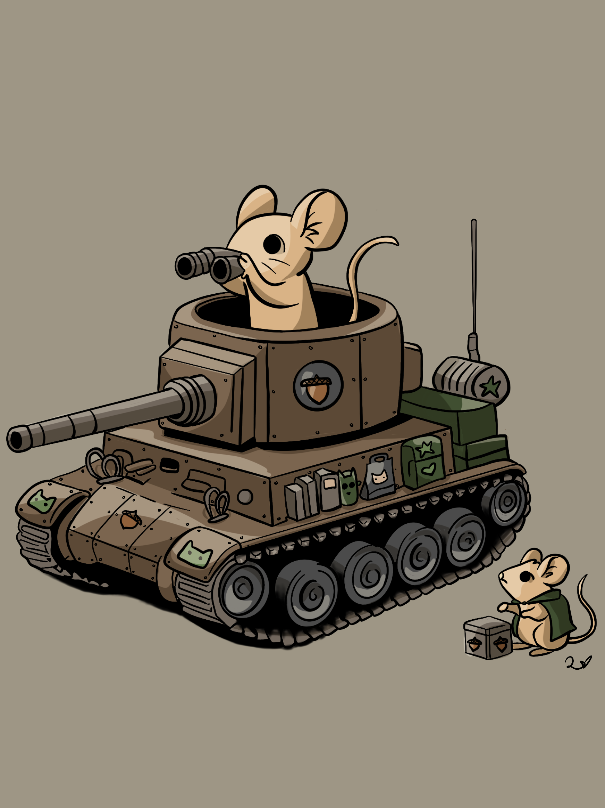

Rules
THESE RULES ARE SUBJECTED TO BE CHANGED, IF CHANGED PLEASE LOG WHAT WAS CHANGED
Board Setup
Initiative roll to determine turn: D8 - highest goes first
Board is of size “25 x 25”
There are 2 teams, which are initially put at 2 corners of the board.
Each corner is a square of size “4 x 4”
The middle zone is of size “3 x 3” (considering adding 2 more zones at 2 corners)
There are cells marked as “obstacle”, which units can not move to there but can use it as hiding covers
Units
There are 4 types of units: Tank, Mechanic, Sniper, and Assault. Currently, there are no card, and variants of a
unit types. For each team, there is 3 Assault units, 1 Sniper unit, 1 Mechanic unit, and 1 Tank unit.

Sniper/Scout
- Total of one health point
- Ability to move ‘2’ tiles
- Ability to shoot at a range of ‘8’ tiles - all directions
- There are 1 scout units for each team.

Assault
- Total of one health point
- Ability to move ‘2’ tiles
- Ability to shoot at a range of ‘4’ tiles and can shoot 2 times per turn
- There are 3 assault units for each team.


Engineer
- Total of one health point
- Ability to move ‘2’ tiles
- Ability to shoot a range of ‘4’ tiles.
- There is 1 engineer unit for each team.
- Either able to fix the tank unit for a fixed number of times or do one of following action each
turn:
fix,
move,
and attack


Tank
- Total of two health points
- Ability to move ‘2’ tile in cardinal directions (if we move diagonal then we move to the grid that
diagonal
to the corner of the current position of the tank)
- Ability to shoot a ‘2x6’ beam in the current direction, and turning to a new direction cost a
turn.
- Ability to repair a tank in a range of ‘1’ tiles for one health point.
- There is 1 tank unit for each team.
Gameplay
A D6 is rolled to determine number of units a player is able to move in a turn. *
In a turn, a unit can move to a new position and begin attack immediately
Units can move and shoot in eight directions, the cardinal directions and diagonals.
Units have to move number of units in rule.
Winning condition
There are two modes of winning:
- Either capturing the middle zone for one full turn i.e. having units enter the turns, having these units
survive
the next turn of the opponent, and win , (considering capturing 2 out of 3 zones to win, you conquer an
enemy
occupied zone for having a unit there in one turn, and to win you need to captured 2 zone simultaneously)
- or eliminating all other player’s units
Power Up
I suggest 2 types of power up: putting in the 2 unoccupied corners of the board:
- Type 1: Choose any unit of the opponent and deal 1 damage
- Type 2: Revive one lost unit, or add one random unit to your starting zone